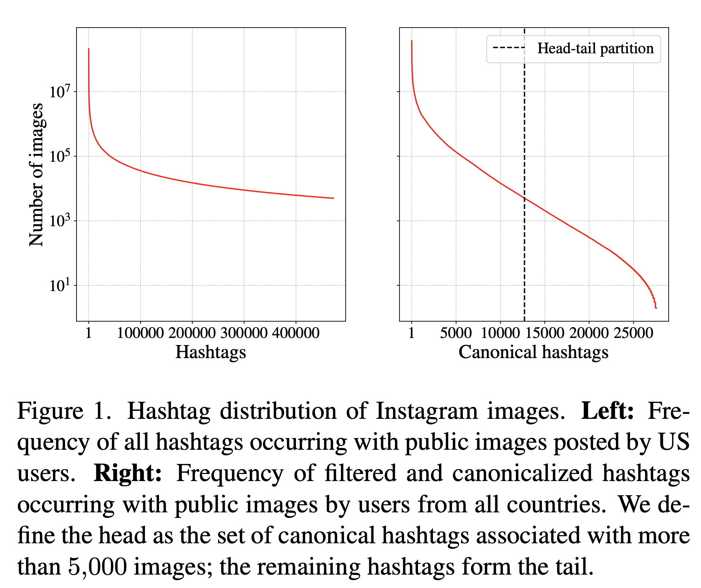
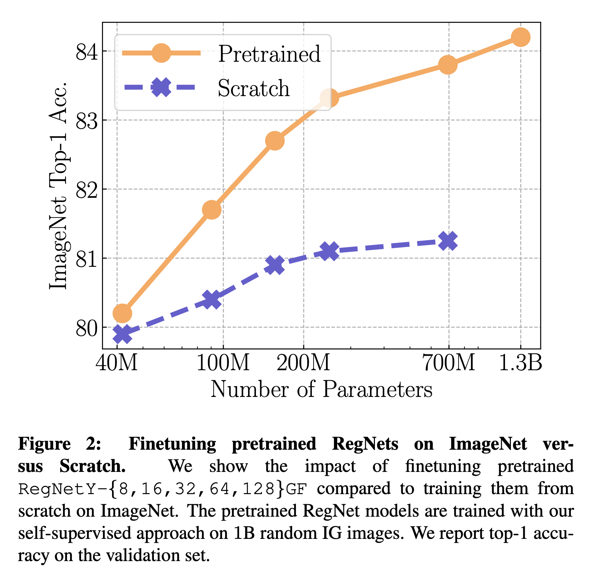

Research Interests
Video Generation
Text-to-video and video-editing generative models
Multimodal Learning
Unified understanding of vision, language, and other modalities
Large-Scale Learning
Training and scaling models on billions of images and videos
Computer Vision
Visual perception models, image classification, and object detection
Self-Supervised Learning
Learning visual representations from unlabeled images and videos
Publications
View all publications on Google Scholar






Media Coverage
Blogs
Meta AI Blog
Oct 2024
How Meta Movie Gen could usher in a new AI-enabled era for content creators
Meta AI Blog
Sep 2024
Llama 3.2: Revolutionizing edge AI and vision with open, customizable models
Meta AI Blog
Nov 2023
Emu Video and Emu Edit: Our latest generative AI research milestones
Meta AI Blog
May 2023
ImageBind: Holistic AI learning across six modalities
Meta AI Blog
Mar 2021
SEER 10B: Better, fairer computer vision through self-supervised learning on diverse datasets